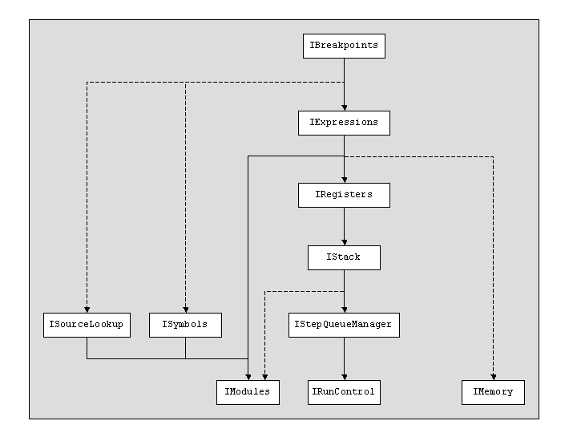
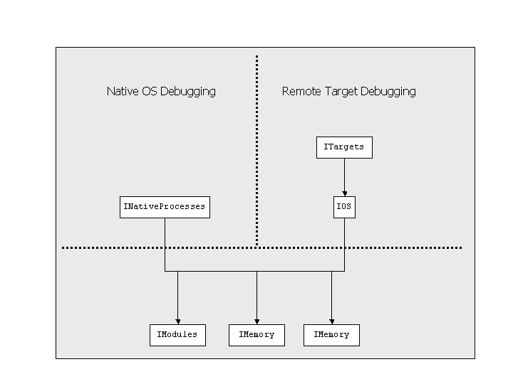

DSF Services Model
Version
1.0
Pawel Piech
© 2006,
Wind River Systems. Release under EPL
version 1.0.
Debugger Services Framework (DSF) is primarily a service framework
defining rules for how
services should be registered, discovered, organized into functional
groups, communicated with, and started/ended. These rules help to
organize the services into a functional system that efficiently
abstracts various debugger back end capabilities.
DSF services build on top of the OSGI services framework, so
it's important to understand OSGI services before looking at DSF
itself. For an overview of OSGI including services, see the presentation
on OSGI from EclipseCon 2006. For detailed information, see
OSGI javadocs, primarily: org.osgi.frameworkServiceRegistration,
BundleContext, ServiceReference, Filter, and ServiceTracker.
Services
In OSGI any class can be registered as a service. In DSF,
Services must implement the IDsfService
interface, which requires that the service
provide:
- Access to the DsfExecutor that
has to be used to access service methods.
- Full list of properties used to uniquely identify the service in
OSGI.
- Startup and shutdown methods.
For the first two items, a service must use the data it received from
its constructor. For the third item, a service must register and
unregister itself with OSGI. But beyond that, this is all that
services have in common, everything else is up to the specific service
interface.
DSF services are organized into logical groups, called
sessions. Sessions are only necessary because we want multiple
instances of systems built with DSF services to run at the same
time This is because there is only a single OSGI service
registry, so if multiple services are registered with a given class
name, OSGI will not be able to distinguish between the two based on the
class name alone. So there is an additional property which is
used by every DSF service when registering with OSGI, IDsfService.PROP_SESSION_ID.
A Session object
(TODO: link javadoc) has the following data associated with it:
- Session ID - A String object that is unique
among all other sessions. Its ID is used by services as the IDsfService.PROP_SESSION_ID
property, and it is used by the client to obtain the Session object instance.
- DsfExecutor
- Each session has a single executor. This means that all the
services in a single session share the same executor and dispatch
thread, and conversely it means that when operating in the dispatch
thread, the state of all the services in a session will remain the same
until the end of a dispatch. Note: multiple sessions could share the same DsfExecutor.
- Service startup counter
- An integer counter which is read and incremented by every service
that is started in a session. This counter is used to determine
the dependency order among services, which is used by events.
- Event listener list
- This will be covered in the "Events" section.
- Adapter list - A
list of adapters, providing functionality analogous to runtime's org.eclipse.core.internal.runtime.AdapterManager.
Sessions need to manage their own lists of adapters, so that IAdapter objects which
originate from DSF services can provider different adapters, based
on the session that they originate from. This feature is covered
in detail in the "DSF Data Model" document.
The Session class also has a number of static features used to
manage Session objects:
- Session ID counter
- Used to generate new session IDs.
- Methods for starting
and ending sessions
- Session started/ended
event listener list - This allows clients to be notified when
sessions are created or terminated, which is used mostly for clean-up
purposes.
Startup/Shutdown
Managing the startup and shutdown process is often the most complicated
aspect of modular systems. The details of how the startup and
shutdown processes should be performed are also highly dependent on the
specifics of the system and service implementations. To help
with this, DSF provides two simple guidelines:
- There should be a clear
dependency tree of all services within a session - When the
dependencies between services are clearly defined, it is possible to
bring-up and bring-down the services in an order that guarantees each
running service can access all of the services that it depends on.
- There needs to be a
single point of control, which brings up and shuts down all the
services. - In other words, services should not initialize or
shut-down themselves, based on some global event that they are all
listening to. But rather an external piece of logic needs to be
in charge of performing this operation.
The main implication of the first guideline, is that each service can
get and hold onto references to other services, without having to
repeatedly check, whether the service references are still valid.
This is because if a given service is to be shut-down, all services
that depend on this service will already have been shut down. The
second guideline, simply ensures that startup and shutdown procedures
are clear and easy to follow.
OSGI methods for obtaining and tracking services can be rather
complicated. To obtain a reference to a service, the client has
to:
- Get a reference to a BundleContext
object, which can be retrieved from the plugin class.
- Obtain a service reference object by calling BundleContext.getServiceReference();
- Obtain an instance of the service by calling BundleContext.getService(ServiceReference).
But worst of all, when the client is finished using the service, it has
to call BundleContext.ungetService(ServiceReference),
because the bundle context counts the used references to a given
service. All this paperwork is useful for services which manage
their own life-cycle, and could be un-registered at any time. To
make managing references to these kinds of services, OSGI provides a
utility class, called ServiceTracker.
For DSF services, the life cycle of the services is much more
predictable, but the process of obtaining a reference to a service is
just as onerous. DSF provides its own utility, which is
separate from the ServiceTracker,
named DsfServicesTracker.
The differences between the two are listed in table below:
Property
|
OSGI
ServiceTracker
|
DSF
DsfServicesTracker
|
Number
of services tracked
|
While
not strictly limited, it is optimized for tracking services of a single
class type, or more typically to track a single service reference.
|
Designed
to track services within a single DSF session.
|
When
are service references obtained
|
Obtain
references automatically as the services register themselves.
|
Service
references are obtained as requested by the client, and cached. |
Synchronization
|
Multi-thread
accessible.
|
Can
be accessed only on the session's dispatch thread.
|
Clean-up
|
Automatically
un-gets references for services that are shut down.
|
Client
must listen to session events, and clean up as needed.
|
Both trackers are useful. Service implementations that depend
on a number of other services are most likely to use DSF ServicesTracker, while some
clients, which use a single service may find OSGI ServiceTracker more suitable.
Events
Events are the most un-conventional component of the services package
and probably most likely to need modifications to the design by the
community. The design goal of
the event system is to allow a hierarchy of event classes, where a
listener could register itself for a specific event class or for all
events which derive from a base class. The use case for this
behavior is in the data model, where we would like to have the ability
to capture all model-related events with a generic listener while at
the same time allowing for services to fully use class types.
The event model is made up of the following components:
- DsfServiceEventHandler annotation
- This is the only indicator that a given method is an event
listener. The class with the event handler doesn't have to
implement any interfaces, but it must be public, which is a big
drawback.
- Session.addServiceEventListener,
Session.removeServiceEventListener
methods - These methods allow clients to register for an event
based on an event class and a service filter, where the filter can be
used to uniquely identify a service in case of services with multiple
instances of same class.
- Session.dispatchEvent method -
This is the method that actually dispatches the event to the
listeners.
The method must be called by a service that generates the event.
There are only a few more notes about the events mechanism:
- The event is always dispatched in its own Runnable submitted to
the session's DsfExecutor.
- There is a slight convenience for clients not to have to register
for each type of event separately.
- There is a slight inconvenience for clients, because anonymous
classes cannot be used as listeners, due to the public class
requirement.
DSF framework includes a set of service interfaces for a typical
debugger implementation. Functionally, they are pretty much
equivalent to the platform debug interfaces, but they are structured in
a way that allows a debugger to implement only some of them. In
order for the startup and shutdown process to work effectively, the
dependencies between services need to be clearly defined. The
dependencies between the main service interfaces are shown in the graph
below:

It's also important to realize that it's unlikely that a single
hierarchy of interfaces will adequately fit all the various debugger
use cases, and it is likely that some interfaces will be needed which
partially duplicate functionality found in other interfaces.
An example of this in the proposed interface set are the interfaces
which are used to initiate a debugging session. The INativeProcesses service is
intended as the simple abstraction for native debuggers, where a
debugger only needs an existing host process ID or an executable image
name. Based on this a INativeProcess
debugger implementation should be able to initiate a debugging session,
and return run-control, memory, and symbol contexts that are required
to carry out debugging operations. By comparison, IOS and ITarget are generic interfaces
which allow clients to manage multiple target definitions, to
examine a wide array of OS objects, and to attach a debugger to a
process or some other debuggable entity.

Disclaimer
Drafting large APIs that are intended to have many implementations and
by clients is a notoriously difficult task. It is
impossible to expect that a first draft of such interfaces will not
require changes, and only time and multiple successful implementation
can validate them. While we can draw upon many examples of
debugger
APIs in Eclipse in and our commercial debugger, this is a new API with
a
prototype that exercises only a small portion of its interfaces.